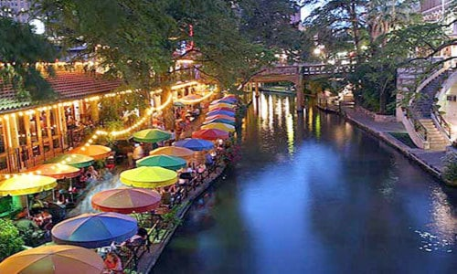

Theme Parks

San Antonio has quite a few options for the theme park junkie. Visit this section see the great theme parks in the city.
San Antonio is one of the largest cities in America and is constantly growing. Whether it be history, entertainment, culture, or food the city has something to please people of all ages. Whether you are planning to move here or come for a visit, you will not be dissapointed with your stay here in the Alamo City.
San Antonio is rich with culture and history spanning over many years. The Alamo is without a doubt the most historical site in San Antonio. It brings in over 2.5 million tourists a year, wanting to learn more about Texas history and the epic "Battle of the Alamo" which played a pivotal role in the Texas Revolution. If the Alamo is not enough to satisfy your history itch, the city has many historical parks and sites to re-live and learn about the past.
Here are some popular types of destinations within the city. Click on the type of attraction you are looking for to see some more info and locations.
Dining & Drinks
Everyone loves a good meal or a good drink. Click here to see more dining and drinking options
Theme Parks
San Antonio has quite a few options for the theme park junkie. Visit this section see the great theme parks in the city.